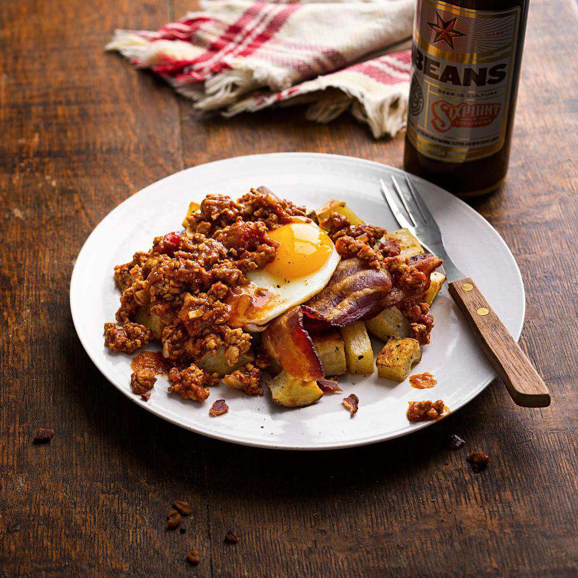

Also known as a Wilbur, and sometimes described as a "culinary car crash", slinger is a St. Louis specialty that is known as a great hangover cure. Traditionally served for breakfast or lunch, it typically consists of fried eggs, two hamburger patties, fried potatoes or hash browns, heaps of chili, and a garnish of grated cheese and chopped onions. It is usually served with hot sauce on the side.
Meal prep time : 30 minutes
Servings : 2